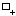
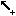
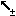

Definition of a Logical Regulatory Graph
- Tutorial
- Definition of a Logical Regulatory Graph
- Running a simulation
- Analysis of a State Transition Graph
In the logical formalism, a regulatory network is modelled as a regulatory graph. In this graph, nodes represent genes or regulatory products, and arcs represent interactions between genes. Modelling attributes determine the dynamical behaviour of the network.
Defining the regulatory nodes and interactions
You will now edit the regulatory graph to start defining the model for the core regulatory network of the phage lambda lysis-lysogeny decision (now on called Lambda4 model):
Components of the Lambda4 model their maximal levels
Gene |
Max. |
Cro |
3 |
C1 |
2 |
C2 |
1 |
N |
1 |
The first step for the definition of a model, is the definition of the graph per se. Genes and interactions can be interactively added, selected, moved or deleted, depending of the current editing mode. The edit mode can be changed using the toolbar buttons, the pushed button reflects the current mode.
Available edit modes | |
Default edit mode: to select objects for edition (displacement, modification of modelling attributes and styles). |
|
 |
Node insertion mode: to add new nodes by clicking on the graph panel. |
  |
Interaction insertion mode: to add intereactions by dragging from one node (source) to another (target). The interactions must be complemented by the definition of the logical parameters for the target variable (see below). The four buttons allow to add different kinds of interactions: activation, inhibition, dual or undefined. |
|
Delete mode: to delete the selected objects (please note that GINsim does not provide an undo command). |

The selection of non-default editing modes is transient by default: once an action has been performed, GINsim switches back to the default mode (E). Double-click on the desired mode to lock it.
Use the Modelling Attributes panel to define the IDs and max levels of the components. Each gene is Boolean by default, i.e. its maximal level is 1. This maximal level can be increased to define multivalued components (see figure).
Interactions operate for a given range of activity levels of their sources. In the case of multivalued models, the thresholds above which some interactions are active need to be defined (per default, the interval is set to [1, Max], where "Max" is the maximal level of the source).
Here again, you will use the Modelling Attributes as shonw in the figures.
Interactions in the Lambda4 model.
Source |
Target |
Sign |
Threshold |
Cro |
Cro |
- |
3 |
C1 |
- |
1 |
|
C2 |
- |
3 |
|
N |
- |
2 |
|
C1 |
Cro |
- |
2 |
C2 |
- |
2 |
|
N |
- |
1 |
|
C2 |
C1 |
+ |
1 |
N |
C2 |
+ |
1 |
In the non-Boolean case, a gene may have several distinct effects on another, depending on its activity level. In this case, only one arc is drawn, encompassing multiple interactions, each with its own threshold. An interaction is then active when the level of the source is above its threshold, and below that of the next interaction.
Modelling Attributes for Cro
Editing Logical Parameters
The dynamical behaviour of each gene is defined as Logical parameters. Each logical parameter is defined as a set of incoming interactions and a target value. It denotes that, during the simulation, when
For each component, a logical parameter is defined by a list of active interactions, i.e.:
the specified incoming interactions are all active (i.e. the expression levels of their sources lay in the related activity ranges),
and none of the other incoming interactions is active,
then the level of the considered component tends towards the value of the logical parameter.
Formally, each logical parameter corresponds to a single line of a truth table.
Non-zero logical parameters of the Lambda4 model.
|
|
The empty set symbol ∅ denotes the situation where no interaction is active, refering to a so-called basal value of the component (deselect all interactions on the right hand side sub-panel, see figure below).
Per default, parameters are set to zero. Consequently, only the non-zero parameters have to be explicitly defined.
To define a parameter, consider the panel of the Modelling Attributes tab, with three parts:
On the left, a table lists all defined logical parameters, showing their values and the corresponding lists of interactions.
On the right, the list of all incoming interactions acting on the selected node.
-
The central part contains the following buttons:

assigns the set of selected incoming interactions (from the right list) to the selected logical parameter (use shift and ctrl to select several interactions)

deletes the selected logical parameter

reorder the selected logical parameters
With the parameters as defined in the previous table, the CI autoregulation is not functional, i.e. it plays no role in the behaviour of CI. In other words, combinations with and qithout CI autoregulation lead to the same target values. Indeed, although CI has been reported to directly activate its own promoter, the effect does not appear to be crucial for the lysis-lysogeny decision. GINsim provides a mean to analyse interaction functionality and identify such non-functional interactions as well as discrepancies between interaction signs and regulatory effects.
Changing the graphical attributes
to be done... (see Styling graphs in the user manual).
Further explanation will come soon, meanwhile, see Styling graphs in the user manual).
Saving the graph
This is done by using the Save option of the File menu, or the keyboard shortcut (Ctrl s). The File menu contains the classical actions allowing to save, open or export files. GINsim uses a dedicated XML format: GINML.
GINsim creates a zip file (with a .zginml extension), which contains the graph (in GINML format) along with related data, such as simulation parameters and mutant definitions.